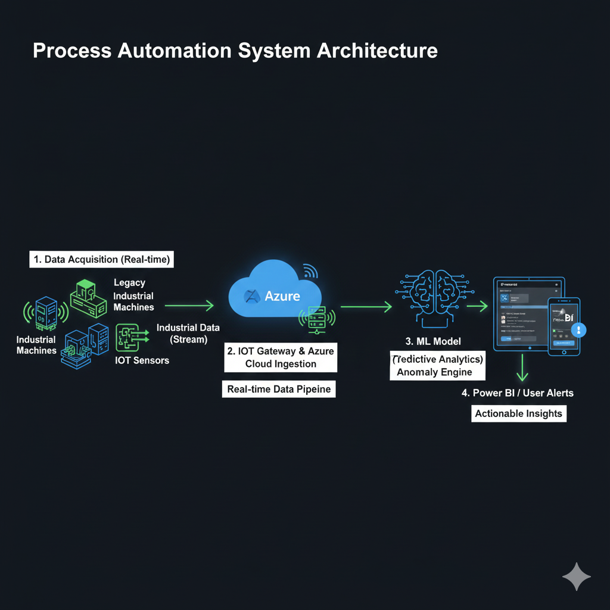
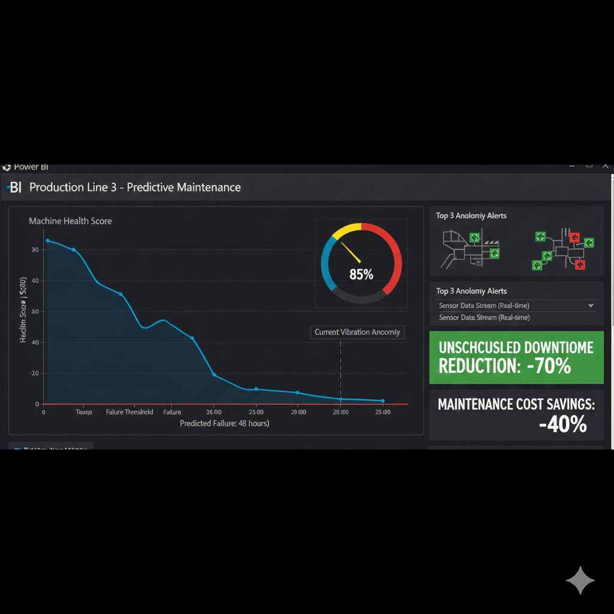
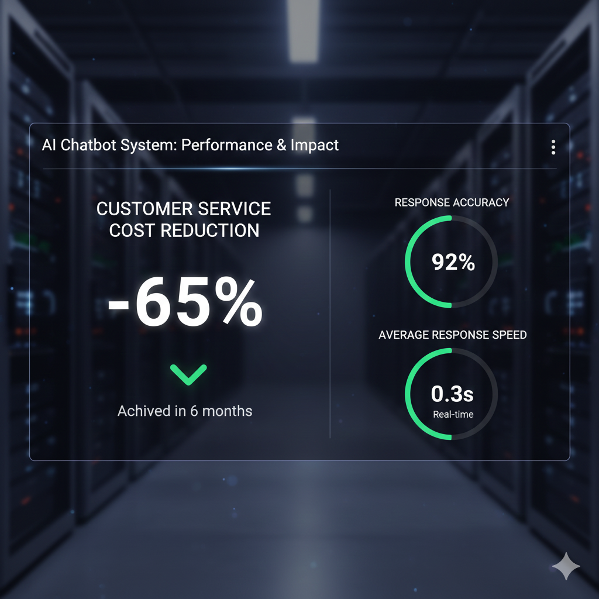
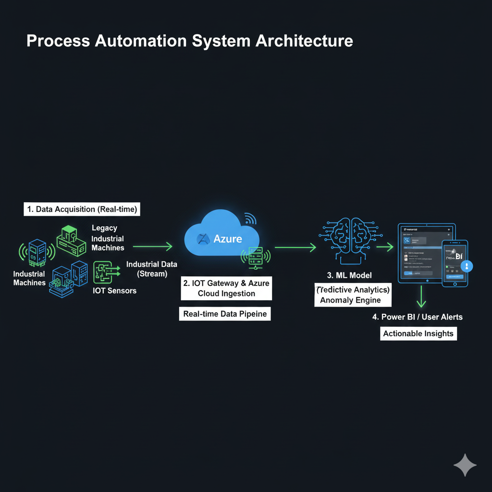
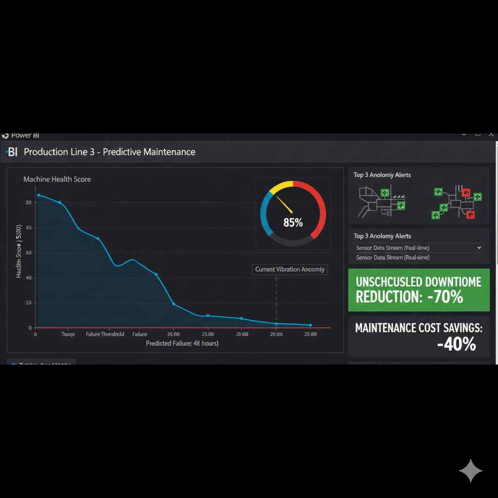
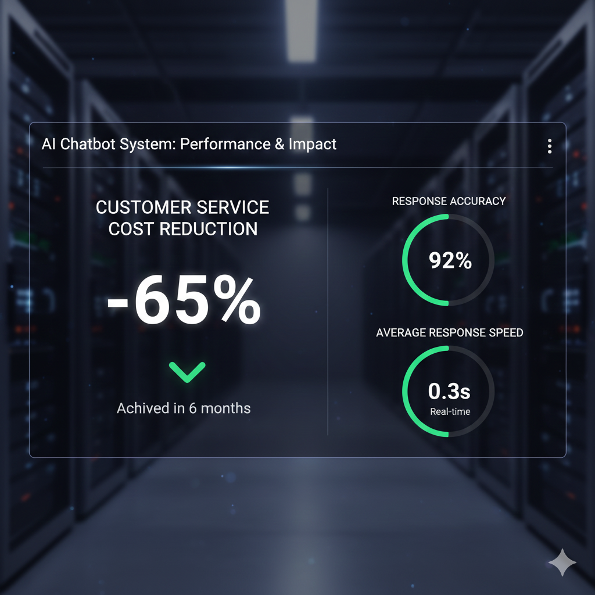

Workflow automation solution for a manufacturing company, focused on integrating **IoT sensors** and
machine learning for **predictive maintenance** and optimizing production lines.
Challenges & Solutions
Successfully integrating legacy industrial machines with modern IoT gateway technology.
Developing robust pipelines for **real-time data collection** and complex analysis.
Creating accurate **predictive maintenance algorithms** to anticipate equipment failure.
Managing organizational change and **user training** for the new automated systems.
 DeveloperBee
DeveloperBee
 




